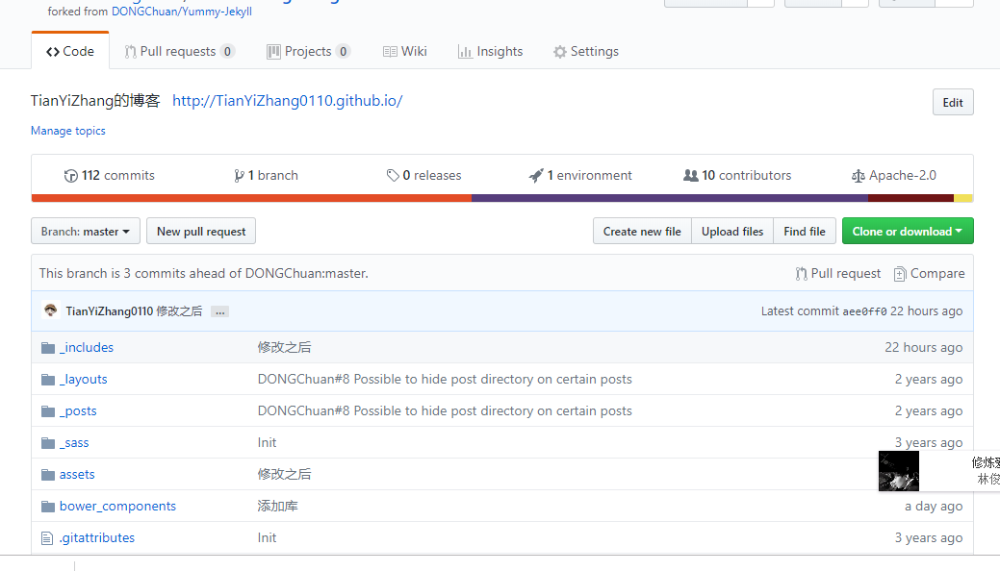
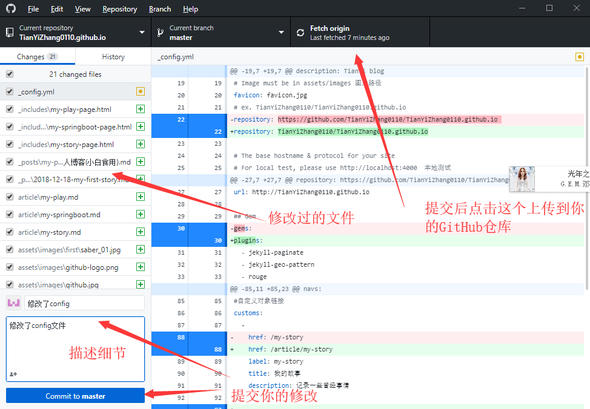

镇楼图

前言
折腾了2天，踩了许多坑，终于把自己blog搭起来了，搭blog容易，写blog才难。
但是万事开头难，走了一步就相当于走了一半，持之以恒，当你习惯了写blog这个习惯，你就真的习惯了习惯。
为什么要写blog
第一阶段，刚接触Blog，觉得很新鲜，试着选择一个免费空间来写。
第二阶段，发现免费空间限制太多，就自己购买域名和空间，搭建独立博客。
第三阶段，觉得独立博客的管理太麻烦，最好在保留控制权的前提下，让别人来管，自己只负责写文章。这是大佬总结的我仿佛是直接跨到了第三步，可能是觉得弄一个自己的blog很有趣吧(对就是喜欢折腾)。
打造自己的个人blog，以前大多数人在第二阶段，但又觉得很麻烦，要买域名和空间。
GitHub的出现改变了这些，你只需要写blog，GitHub帮你管理，你又有blog的控制权，又有免费的劳动力帮你管理，而且还有无限流量，所以越来越多的人在GitHub上搭建blog。
认识GitHub和GitHub Pages
简单说GitHub就是一个有版本管理功能的代码仓库，每一个项目都有它的主页，主页会列出源代码
比如这样

全是源代码，看起来恼火的很，所以引入了GitHub Pages，允许用户自定义项目首页，用来替代默认的源码列表。所以，github Pages可以被认为是用户编写的、托管在github上的静态网页。
github pages - 主页 - 一些关于GitHub Pages的配置
认识Jekyll
Jekyl是一个静态站点生成器，它会根据网页源码生成静态文件。它提供了模板、变量、插件等功能，所以实际上可以用来编写整个网站。
jekyll中文网站 - 主页 - Jekyll中文文档
我们要做的就是本地用Jekyll规范编写网站源码，然后上传到GitHub，让GitHub来帮我们管理，我们只需要写自己blog就行了。
好了说了这么多废话开始入正题了。
开始搭建
GitHub - GitHub官网注册一个GitHub账号
- 注册账号应该不用教了，程序员都会把。
Jekyll Theme - Jekyll主题站，选择你喜欢的主题，fork后修改，具体步骤如下
- 找到自己喜欢的主题点HomePage
- 在点击Fork将别人的项目copy到自己的仓库
- fork完后要修改仓库名字，根据GitHub Pages的默认配置(此处是GitHub Pages的配置文档),仓库名是username.github.io,例如我的仓库名就是TianYiZhang0110.github.io
- 点击setting，修改仓库名称，点击Rename
- 如果你fork的项目只有一个分支且为gh-pages，你可能需要在创建一个主分支master，点击Code，再点击Branches，输入master，创建分支，由于GitHub规定由master、gh-pages以及doc可以作为github pages页面源，我测试是单独master就会自动设置为页面源，你也可以试试其他的，详见GitHub Pages的默认配置(此处是GitHub Pages的配置文档)
- 如果没有意外，这个时候你就可以打开你的个人博客了，地址是： 你的github名字.github.io，如我的github名字是TianYiZhang0110，则我的个人博客是TianYiZhang0110.github.io，但是里面的信息还是别人的，你需要改一改数据。
- 在电脑上修改元数据(配置文件)
- 要把GitHub的项目clone到本地需要借助一个工具GitHub for Windows,你也可以下载Git使用命令行来管理你的GitHub。
- 下载安装完[GitHub Desktop]后，开始登陆(输入你的GitHub账号密码)，点击File，在点击Clone a repository,如图选择刚刚fork改名的仓库
- 打开本地路径，然后选择使用Notepad++（一个很好用的文本编辑器，可以打开很多格式的文件，sublime text3也可以，自行选择）打开_config.yml这个文件，其中博客的一些基本配置会在这里，需要修改一些基本数据，详见jekyll _config配置,如图所示
- 修改config文件
- 上传你的修改到你的GitHub仓库
- 此时你的config文件以及修改完成了，并提交了，此时你可以访问一下你的blog看看是不是有些改变了我的blog，你的blog地址https://username.github.io/

- 此时查看都是在提交到github上之后才改变页面，如果你想搭建本地的jekyll环境请看我的另一篇博文如何搭建本地jekyll环境
##一些对你写blog有帮助的链接
- 如果你不想一个个翻，也可以看我的写的另外一篇blog如何使用jekyll-API写博客(小白食用)
- Jekyll文档 - Jekyll文档内容很全
- Jekyll中文文档 - Jekyll中文文档,我觉得英文好点
- Markdown简单入门 - markdown的简单入门，用markdown编辑器写blog必须食用
- Liquid语法快速入门 - Liquid语法简书，也可以看官方文档
- Liquid - Liquid官方文档
- Run Jekyll on Windows - 如何在Windows上运行Jekyll
- Jekyll/Liquid API 语法文档 - 主要介绍关于 Jekyll 的 API 语法
- jekyll Github Pages - jekyll Github Pages 博客搭建 并实现评论 阅读量 以及分类功能
- jekyll Category - jekyll文章如何分类索引
- 控制url - jekyll控制url
- post_url - blog链接另一篇blog
感谢
那些贡献jekyll模板的人，让我少操心了很多事，现成的东西拿过来改改就有很漂亮的样子。